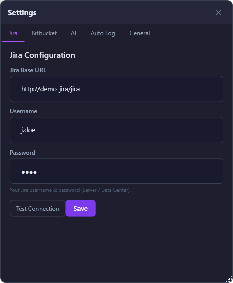
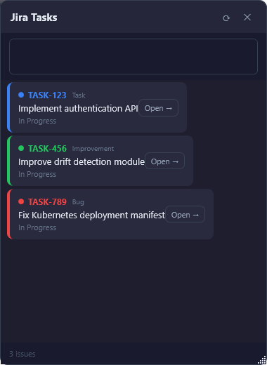
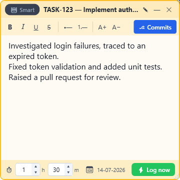
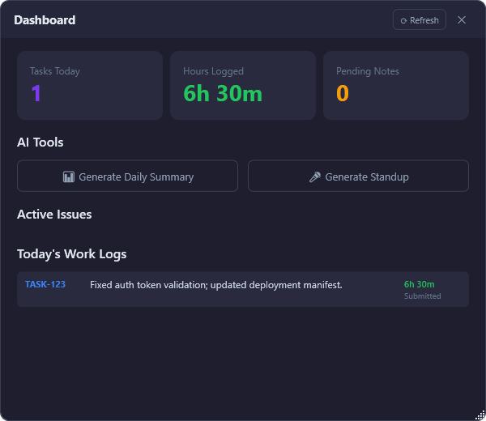

Windows desktop app · Jira & Bitbucket Data Center
Jot quick notes as you work. AI turns them into clean, professional Jira work logs — and submits them for you.
The idea
The app sits in your Windows system tray as colourful sticky notes. Each time you finish something, type one line. At the end of the day AI does the writing — you just review and submit. It also reads your Bitbucket commits and can log everything automatically at a set time.
Step 1 · From scratch
No administrator rights, and nothing else to install first — the runtime is bundled.
Copy JiraWorkLogAssistant-Setup-x.y.z.exe to your PC.
Double-click → the friendly wizard opens. Tick Desktop shortcut and Start with Windows if you like.
Click Install → Finish. The app launches straight into your system tray.
Bottom-right, near the clock (click the ^ chevron if hidden). Double-click it to open a new note.
%LocalAppData%\JiraWorkLogAssistant\ (database + logs). Credentials are encrypted. Removed on uninstall.Step 2 · Connect your tools
Right-click the tray icon → Settings. Everything is stored locally and encrypted. Test each connection, then Save.

Base URL, Username, Password → Test Connection → Sync Jira.
Username, Password, and one or more full repo URLs, e.g. http://host/bitbucket/projects/INDIA/repos/repo_name.
API Base URL (ending /v1), optional API Key & Model Name.
Auto Log: enable + daily time. General: start with Windows, submission behaviour, idle notifications, Smart Distribution confidence.
Your control centre
Right-click the tray icon for the full menu; double-click for a quick new note.
Step 3 · Features


Manual mode
Search & pick a Jira task (a ✎ lets you switch later), and jot as you go. Everything auto-saves.
Smart Distribution
Flip the Smart toggle, dump all your notes, enter your total hours. AI decides which note belongs to which issue and splits the time.
Bitbucket integration
You branch per Jira task, so the ⎇ Commits button reads today's commit messages from Bitbucket and summarises them into points.

Automation & insight
Set a time and your notes submit themselves. Open the dashboard for the day's numbers and AI-generated updates.
Nothing reaches Jira until you approve it — with a clear success or red error.
Submitting clears that note; genuinely unlogged drafts are kept when you switch tasks.
Snap every open note to the right edge, stacked and always-on-top.
Logs use your actual time (and chosen date); auto-log uses the configured time.
Keep taking notes with no connection; sync and submit when you're back.
Optional idle reminders and submission notifications.
Choose your flow
Pick a task, write notes, set time, log. AI polishes each note into a point and you review before it submits.
Write everything, enter total hours. AI distributes across tasks and splits time. Always reviewed.
Your terse notes become clear, point-by-point entries, with a review step.
Skip AI and the popup — your text goes straight to Jira, formatting preserved.
From scratch
Run the setup, then double-click the tray icon to open your first note.
In Settings, fill Jira, Bitbucket & AI, Test each, then Sync Jira.
Search the dropdown and select your task — or flip Smart mode for many tasks.
Type notes as you go, or click ⎇ Commits to import today's commits. Set your time.
Click ⚡ Log now → AI polishes → review the wording & time → Submit.
Open the Dashboard for hours logged, a daily summary, and your standup.
Advantages
No more end-of-day “what did I even do?” archaeology.
Written while work is fresh and backed by your real commits.
Your effort is visible, professional and well worded.
Data stays on your PC; all credentials are encrypted.
OpenAI or your self-hosted model — nothing leaves your network.
Installs in seconds. No admin rights, no .NET to install.
Good to know
Check your Base URL includes the context path (e.g. /jira) and your username/password. The app uses Jira REST API v2 for Server/Data Center. The logs at %LocalAppData%\JiraWorkLogAssistant\logs\ show the exact HTTP error (401 = auth, 404 = wrong URL).
They're independent services. The AI Base URL must end at /v1 (the app appends /chat/completions). If your model is encoded in the URL path, leave Model Name blank.
Enter a valid AI endpoint in Settings → AI. Any failed AI call (bad URL, key, unreachable host, timeout) shows a clear red message in the note footer.
Some gateways stream by default and reply with Server-Sent Events (text/event-stream) instead of JSON. The app now requests stream:false and also parses streamed responses, so this is handled automatically — make sure you're on v2.2.0 or newer.
Add full repo URLs in Settings → Bitbucket and make sure your branch name contains the Jira key (e.g. TASK-123-fix-auth). In Manual mode, choose the task first.
Only Task, Sub-task, Bug and Improvement are shown. After upgrading, run Sync Jira once to drop older types.
Everything is local at %LocalAppData%\JiraWorkLogAssistant\. Jira/Bitbucket/AI credentials are encrypted. With a self-hosted AI, your notes never leave your network.